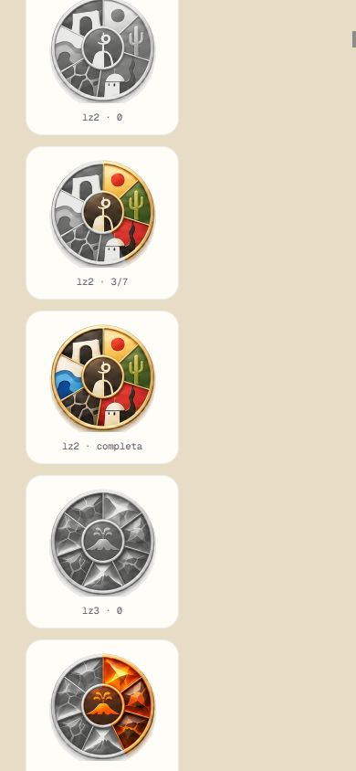
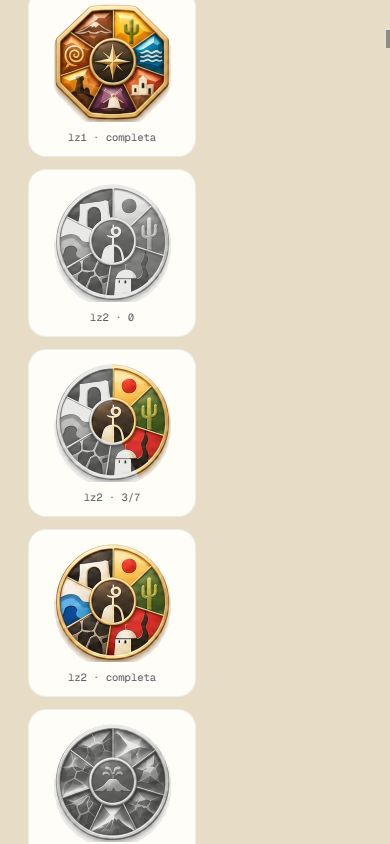
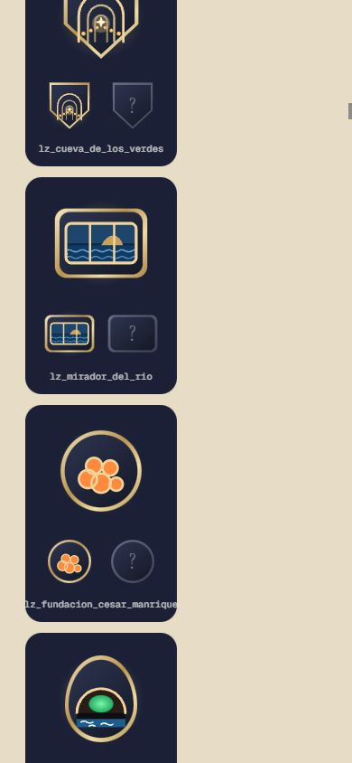
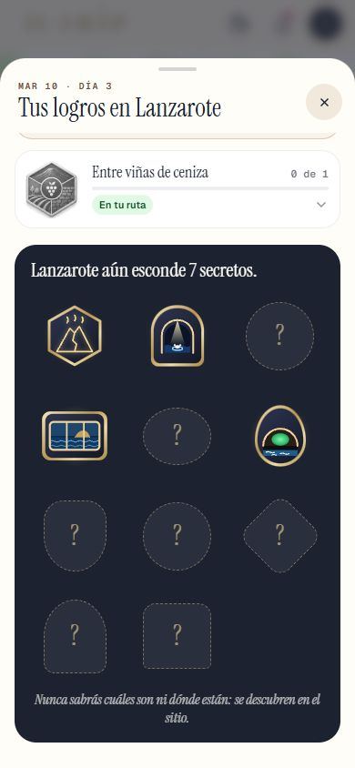
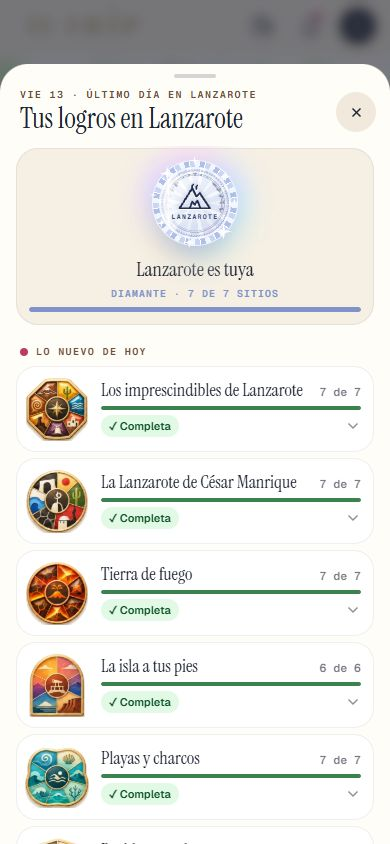
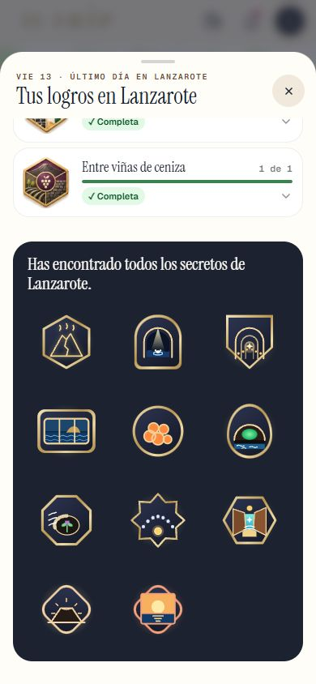

Los logros de Lanzarote (el sello, las 7 colecciones con sus gajos y los 11 emblemas) y el botón «Reorganizar», que «Ahora no» ya no esconde. Lanzarote sigue OCULTO (solo administrador); los logros de Roma no cambian. Marca cada punto en tu teléfono cuando lo hayas comprobado (se guarda en este navegador). Abajo, la tabla gajo → sitio para que la revises.
LZ3 · tabla gajo -> sitio de las 7 colecciones de Lanzarote (el gajo 0 empieza arriba y se cuenta en sentido horario; en la 7, a -150 grados). Fuente de verdad en codigo: src/components/logros/dibujos/gajosColecciones.ts. Ids de sitio = data/pipeline_v2/lanzarote.json (los de las 3 bodegas son provisionales).
| lz1_imprescindibles | 0 cactus -> la_geria_y_sus_bodegas 1 olas -> el_golfo_y_el_charco_de_los_clicos 2 casa blanca -> fundacion_cesar_manrique 3 molino -> jameos_del_agua 4 roca/arco -> mirador_del_rio 5 espiral -> cueva_de_los_verdes 6 montana -> montanas_del_fuego |
| lz2_manrique | 0 sol rojo -> mirador_del_rio 1 cactus -> jardin_de_cactus 2 lava y cumbre -> casa_museo_del_campesino 3 casa blanca -> haria_y_la_casa_museo_cesar_manrique 4 lava agrietada -> fundacion_cesar_manrique 5 agua azul -> jameos_del_agua 6 arco blanco -> castillo_de_san_jose |
| lz3_tierra_de_fuego | 0 -> montanas_del_fuego 1 -> cueva_de_los_verdes 2 -> los_hervideros 3 cono de volcan -> volcan_del_cuervo 4 -> las_grietas_montana_blanca 5 -> caldera_blanca 6 -> ciudad_estratificada_rofera_de_teseguite |
| lz4_isla_a_tus_pies | 0 nubes naranjas -> ermita_de_las_nieves 1 montanas moradas -> mirador_de_guinate 2 risco rojo -> mirador_del_bosquecillo 3 mar -> salinas_de_janubio 4 mar y monte -> mirador_del_rio 5 sol con rayos -> mirador_de_haria |
| lz5_playas_y_charcos | 0 concha -> playas_de_papagayo 1 ola grande -> caleta_de_famara_y_playa_de_famara 2 coral -> punta_mujeres_y_arrieta 3 ola pequena -> caleton_blanco 4 ola rompiendo -> playa_de_la_garita 5 ola -> playa_de_montana_bermeja 6 espiral de ola -> el_golfo_y_el_charco_de_los_clicos |
| lz6_pueblos_con_alma | 0 campanario -> teguise 1 puerta verde -> arrecife_charco_de_san_gines_y_el_paseo 2 piedra negra -> el_golfo_y_el_charco_de_los_clicos 3 palmera -> haria_y_la_casa_museo_cesar_manrique 4 casas blancas -> caleta_de_famara_y_playa_de_famara |
| lz7_vinas_de_ceniza | 0 volcan -> la_geria_y_sus_bodegas 1 muro de piedra -> la_geria_y_sus_bodegas 2 vinas -> la_geria_y_sus_bodegas |





